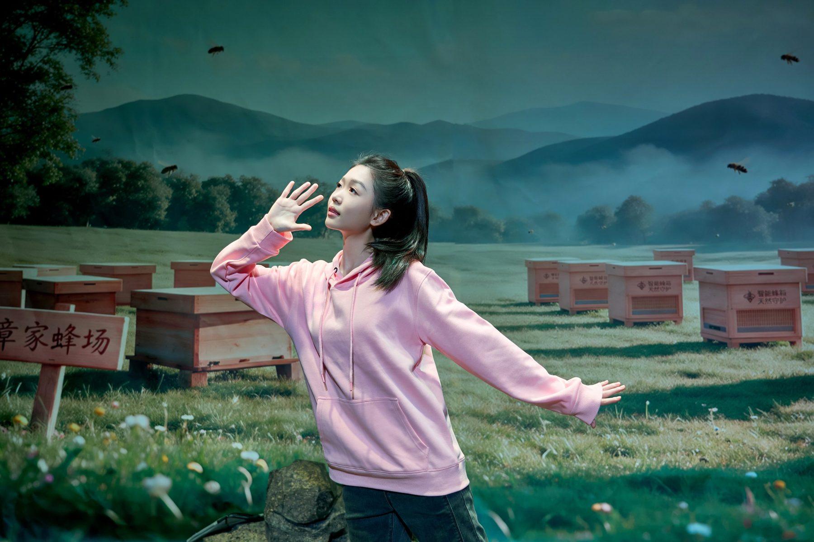
Hello,欢迎来到我的主页。
我是西安人。爱唱歌，写过一出戏，大部分周末不是在秦岭山里，就是在去山里的路上。 I'm from Xi'an. I sing, I wrote a play, and most weekends I'm either up in the Qinling Mountains or on my way there.
这里记的是我这几年做过的事，和我真正在意的东西。 This page is about what I've been doing these past few years, and what I actually care about.
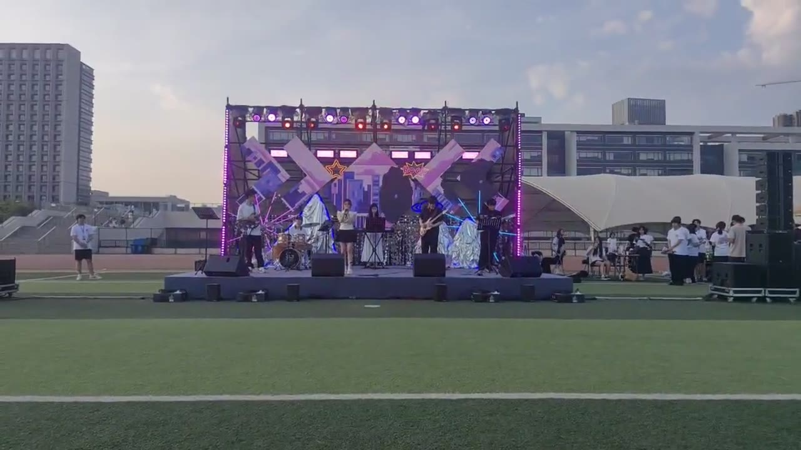
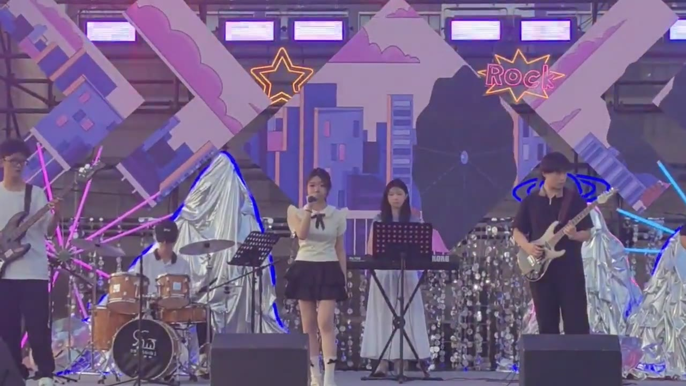
三年都去试了音，三年都站上去了。我家人都爱唱，我是跟着唱大的。Three years of auditions, three years on that stage. Everyone in my family sings; I grew up singing along.
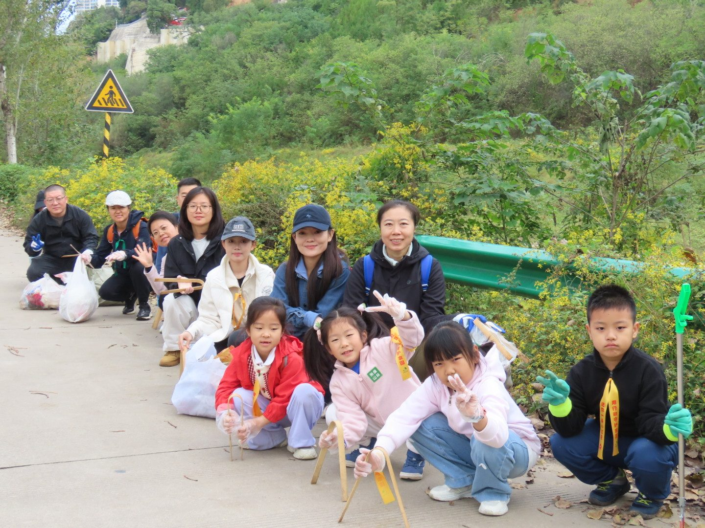
Volunteer · 环保义工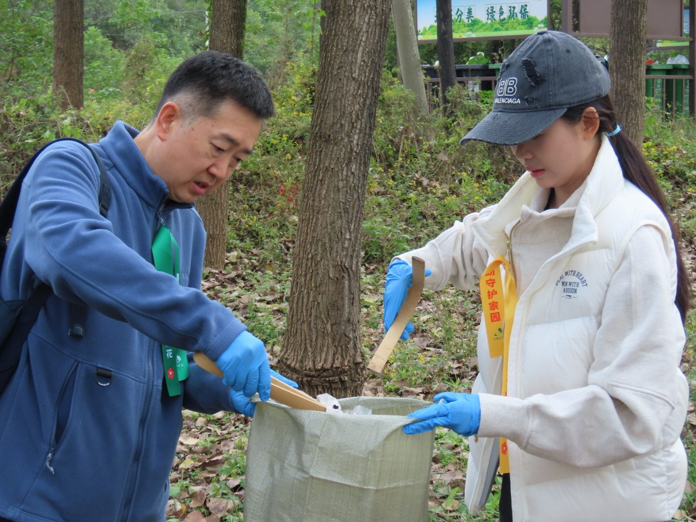
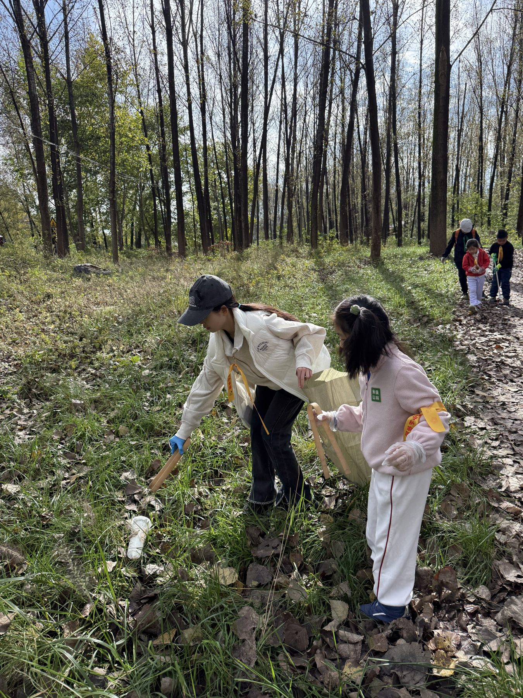
从初中第一次跟队去河滩捡垃圾，到现在一直没停。My first outing was a riverbank clean-up in middle school. I never really stopped.
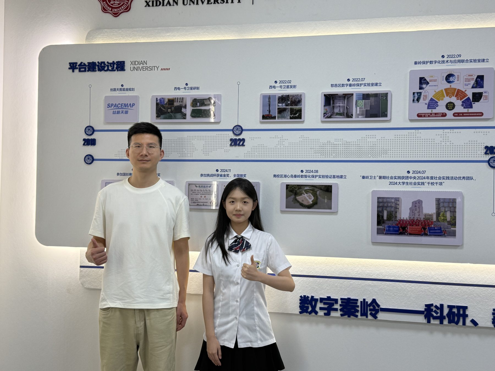
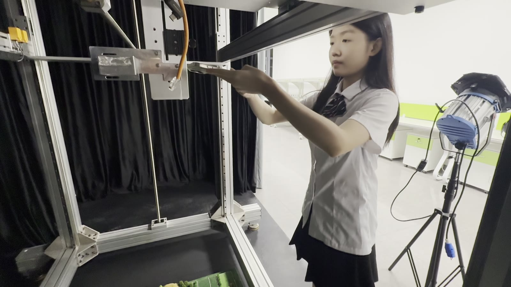
在实验室学着用卫星影像看山，看那些人走不到的地方。Learning to read the mountain from satellite images, in the places no one can hike to.
我在西安长大。这座城做过十三个朝代的都城，南边就是秦岭。小时候常听长辈说，西安是块风水宝地，台风、洪水这些灾害走到秦岭跟前就停了，是山在替我们挡着。那时候我不太懂，只知道周末爸妈常带我进山走走，累了就在溪边坐一会儿。 I grew up in Xi'an. Thirteen dynasties made it their capital, and the Qinling Mountains sit right to the south. When I was little, the grown-ups liked to say Xi'an was a blessed place: typhoons and floods stop at the Qinling, the mountain takes the hit for us. I didn't think much about it then. I just knew my parents took me hiking most weekends, and when I got tired we'd sit by a creek.
后来我长大了，还是常进山，但看到的东西不一样了。山脚下的农家乐越开越多，步道越修越宽，溪边的垃圾也越来越多。有一次在一户蜂农家门口，他指着几个空蜂箱跟我说："蜂一年比一年少。"我站在那儿，第一次觉得这座一直在保护我们的山，可能也需要有人保护它。 I still go up a lot, but I see different things now. More farm-stay restaurants at the foot of the mountain, wider trails, more trash by the creeks. One day a beekeeper pointed at a few empty hives outside his house and said, "Fewer bees every year." Standing there, it hit me for the first time that the mountain that had always protected us might need someone to protect it back.
蜜蜂这件事，就是从那天开始的。左边是我进山做的事，右边是我把这些事讲出去的方式。 That's where the bees started. On the left, what I did in the mountains. On the right, how I tell it.
Qinling Honeybee Project · Pesticides, tourists, and mountain apiaries
我和四个同学一起做的。三次进山，先听蜂农讲，再把听来的事一样样量出来。细节都在小窗里，先看视频。 Five of us did this. Three trips up the mountain: listen to the beekeepers first, then measure what they told us. Details are inside the windows; watch the videos first.
"Leave Half to the Mountain" · An original one-act eco-drama
蜂农跟我说的那些话，我觉得只写进报告里太可惜了，就写成了一出戏。一个养蜂世家三代人，在大旱之年为了老规矩、蜂箱数据和一张两千斤的订单吵成一团。独幕，四个人物，大约十五分钟。 What the beekeepers told me felt like too much to leave in a report, so I turned it into a play. Three generations of one family, in a drought year, arguing over an old rule, hive data, and a 2,000-jin order. One act, four characters, about fifteen minutes.
"蜂箱是你的，蜜是山的。拿一半，明年山还给你。" "The box is yours. The honey belongs to the mountain. Take half, and the mountain pays you back next year." 一位养蜂人在访谈里说的，后来成了这出戏的名字 · A beekeeper said this in an interview. It became the title.
一种是最笨的办法：戴上手套，把河滩上的瓶子一个一个捡起来。另一种是最远的办法：坐在实验室里，从七百公里外的卫星影像上找山哪里受了伤。两件事我都在做。它们看的是同一座山。 One way is the simplest: put on gloves and pick the bottles off the riverbank one by one. The other is the farthest: sit in a lab and look for where the mountain is hurt, from a satellite 700 km up. I do both. It's the same mountain.
Friends of Nature volunteer, since middle school · China's first environmental NGO (est. 1994)
初中第一次跟队去河滩捡垃圾，之后就没断过：观鸟、净滩、给小朋友讲"长安八水"，还有我自己做的碳交易卡牌。都是小事，但做完回头看，那一截河滩是真的干净了。 My first outing was a riverbank clean-up in middle school, and I never really stopped: birdwatching, clean-ups, teaching kids the eight rivers of Xi'an, a carbon-trading card game I made myself. Small things. But when you look back, that stretch of riverbank really is cleaner.
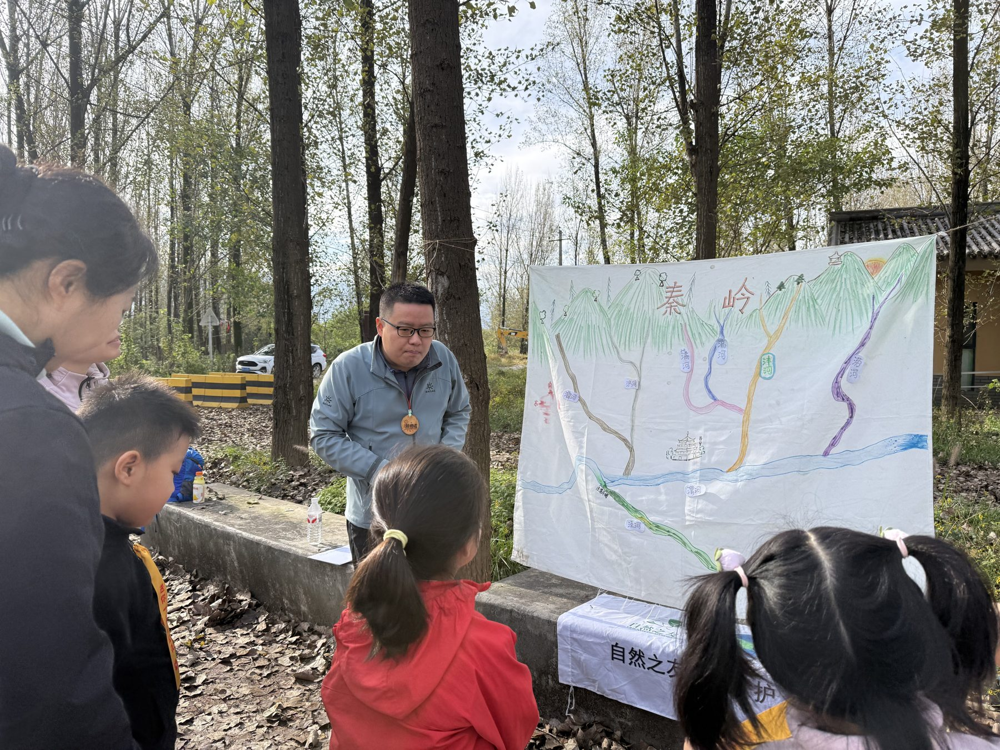
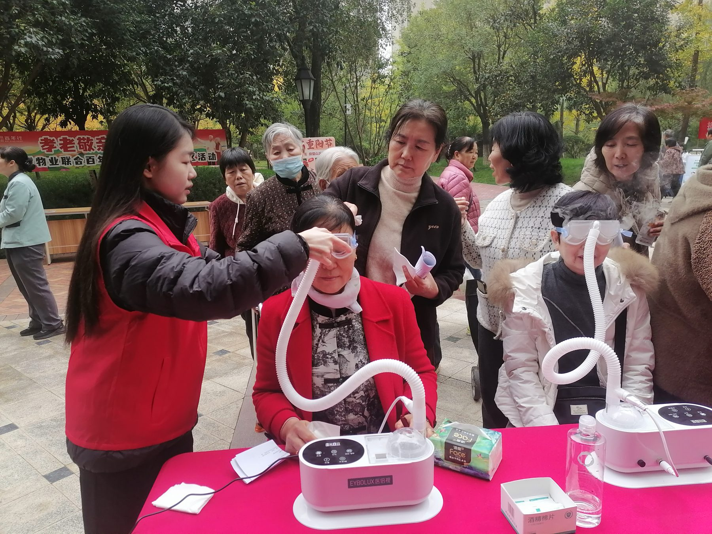
Environmental Monitoring Lab, Xidian University · Remote Sensing for Protected Areas · Student Research Assistant
秦岭很多地方没有路，护林员一年也去不了一次。我在实验室做的事说起来很简单：把不同时间的卫星影像放在一起比，哪里的绿突然没了，就标出来，交给巡护的人去看。 Much of the Qinling has no roads; rangers may not get there once a year. What I do in the lab sounds simple: put satellite images from different dates side by side, mark where the green suddenly disappears, and hand the list to the people who hike in to check.
卫星和传感器能告诉我今天的数，但告诉不了我"清明前后点瓜种豆"是怎么来的。这些话，爷爷奶奶那辈人说了一辈子，没人写下来。我想在它们消失之前记下来，再看看在变暖的秦岭，它们还准不准。 Satellites and sensors can give me today's numbers. They can't tell me where "plant melons and beans around Qingming" came from. The grandparents' generation has said these things all their lives, and nobody wrote them down. I wanted to record them before they're gone, and then check whether they still hold in a warming Qinling.
访谈里物候线索已经挪了 1–2 周的节气（12 个）；点任意一格看详情Highlighted: 12 terms whose signs have shifted 1–2 weeks. Click any term.
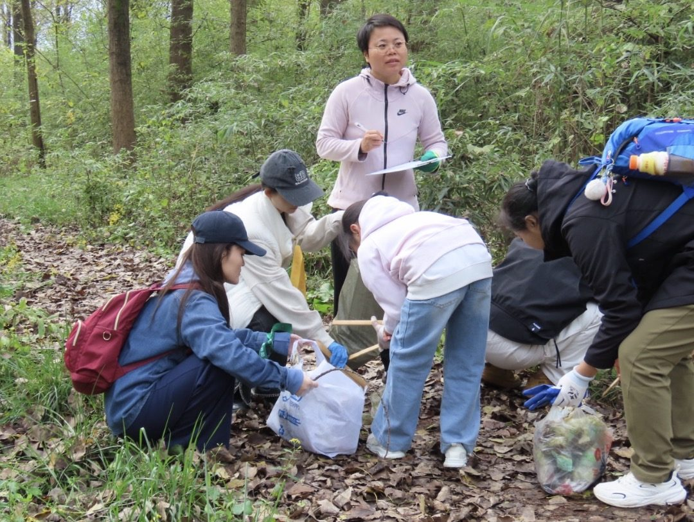
Jieqi Field Club · Documenting elders' unrecorded lore, then checking it against 30 years of climate data
我和 14 个同学挨家走访了 20 户农民，把他们只在嘴上传的东西记下来：看天的老话、跟着节气来的农事提示——什么时候见第一只燕子、杏花哪天开、什么时候该起垄。一共 50 多条，再一条条对照本地 30 年的气象记录，有 12 条已经悄悄挪了一到两周。最后编成一本中英双语的小指南，放进了学校图书馆。 With 14 classmates I went door to door to 20 farming families and wrote down what they'd only ever passed on out loud: weather sayings, solar-term cues, when the first swallow shows up, when the apricots bloom, when to ridge the fields. Fifty-some in all. Then we checked each one against 30 years of local weather records; twelve have quietly shifted by one to two weeks. It all went into a bilingual guide that's now in the school library.
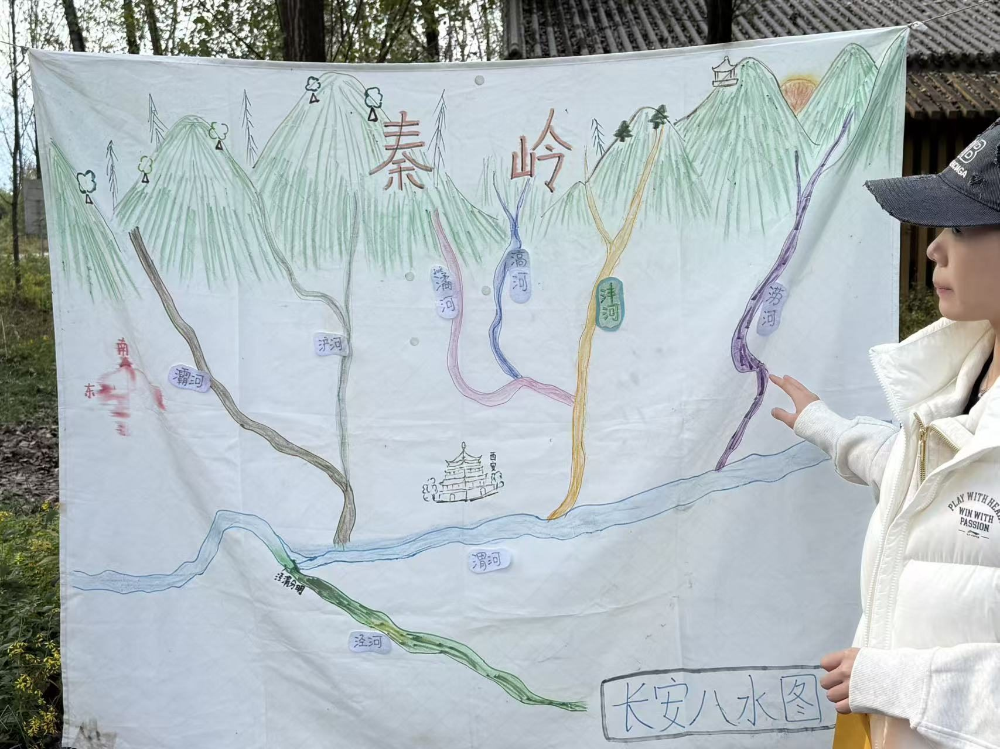
"你们那个卫星看得见山，看不见我这棵杏树哪天开花。我看了四十年，一年比一年早。" "Your satellite can see the mountain. It can't see the day my apricot tree blooms. I've watched it forty years. It comes earlier every year."秦岭北麓果农 · 节气田野社访谈（受访者信息待补）· Orchard farmer, north slope of the Qinling
我家人都爱唱，我从小跟着唱。后来把同样的歌带进了心音社。Three years in a row I made it through auditions and sang solo for 800+ classmates. Singing runs in my family.
合唱、画画、拼豆；教 14 个成员"只听，不劝"。期末周做一对一陪聊。Co-founded a peer-support club: singalongs, drawing, bead art, and 14 members trained to listen rather than advise.
写鸟撞玻璃、流浪猫、树苗枯死和食堂浪费。文字有时真能改一张菜单。Twelve bilingual columns on campus environment. One got the cafeteria to add half portions.
自己出题，四个孩子期末都涨了分。田野的装备是这笔钱置办的。Tutored four middle schoolers. All four raised their grades. The pay bought my field gear.
研究对象是秦岭北麓的中华蜜蜂土法蜂场。这种蜂耐冷、不挑蜜源、基本不用人管，可山下果园在喷药，山上游客越来越多，两头都在挤它。
秦岭蜂农养的多是中华蜜蜂，本土蜂种。跟引进的意大利蜂比，它更耐冷、能用零散的山地蜜源、成本低，几乎不用喂糖，所以山里的老人一桶蜂能养几十年。也正因为它半野生，对环境变化特别敏感：蜜源断了、药味重了，它会直接弃巢飞走。
这三句话，后来分别变成了我们的两个研究变量，和一出戏的名字。Those three lines became our two research variables and the title of a play.
访谈给了方向，但不能当结论。第二趟进山，我们开始记每个蜂场到最近喷药果园、到旅游步道的直线距离，再结合蜂农报的蜂群损失做对比。结果见"摇摆舞怎么变成一张地图"。
蜜蜂找到好蜜源后，会回巢跳一段"8 字舞"告诉同伴去哪儿。读懂这支舞，就能不跟着蜂飞，也知道它们在吃哪片山。
| 分组 Group | 蜂场数 n | 相对损失 Loss | 备注 Notes |
|---|---|---|---|
| 距喷药果园 < 1 km · within 1 km of sprays | — | +40% | 觅食点集中落在果园内 |
| 靠近旅游步道 · near trails | — | +25% | 人流、噪音、游客丢的甜食引来胡蜂 |
| 对照组 · control | — | 基线 baseline | 多为海拔较高的林缘蜂场 |
这不只是我们的猜测。实验发现，蜜蜂吃到田间浓度的新烟碱类农药后，摇摆舞次数明显下降，甚至只剩几分之一，而且变得只肯采很甜的花蜜，带回蜂群的食物大幅减少（UC San Diego，Eiri & Nieh，2012）；另一项针对噻虫胺的田间实验也看到摇摆段次数和觅食范围显著缩小（Tison 等，2020）。农药不一定直接毒死蜂，它先让蜂不会"说话"。
我们把地图打印出来拿给两家果园看：你的果园正好是蜂的主要采集区。黄昏喷药，蜂已经归巢，果园效果也不损失。两家都同意了。
一个秦岭养蜂世家，三代人守着同一片山林，用完全不同的方式养蜂。大旱之年，收购商带着两千斤的订单上门，提出把蜜取净、冬天喂糖浆。奶奶守规矩，父亲要还贷，小满拿出越冬存活率和一场直播，让所有人看见另一种可能。
舞台并排摆放两个蜂箱：左侧是老式黑亮木桶巢，右侧是带太阳能板和指示灯的白色智能蜂箱，背景是简单的远山剪影。全程以蜂鸣声为背景，平和时轻柔，紧张时尖锐细碎，丰盈时如潮水。智能蜂箱的提示音"叮"要清晰、突兀。 Two hives side by side: an old, dark wooden hive on the left, a white smart hive with a solar panel and indicator lights on the right, mountains in silhouette behind. Bee hum runs under the whole play: soft when things are calm, sharp and splintered under tension, swelling like a tide at the end. The smart hive's "ding" should cut through.
完整剧本 · Full script
英文为翻译版，部分本地用词无法精准表达，仅供参考。
English is a translation for reference only; some local expressions don't carry over exactly.
清晨 · 秦岭蜂场 · Morning, the apiary in the Qinling
章奶奶和小满上场，小满拿出手机对着智能蜂箱扫码查看数据。Grandma and Xiaoman enter. Xiaoman scans the smart hive with her phone and checks the readings.
小满 XIAOMAN
奶奶！七号蜂箱温度超标了。天气太干太热了。
Grandma! Hive seven is running hot. It's too dry and too hot out.
章奶奶 GRANDMA
蜂自己会说话，我听得出来。
The bees talk. I can hear it.
小满 XIAOMAN（直起身，笑着 · straightening up, smiling）
奶奶，普通人要想达到您这个境界，那得攒一辈子经验，可我的设备，能把养蜂的技术门槛给降下来。
Grandma, it takes a whole lifetime to get an ear like yours. My gear just lowers the bar so other people can start.
章建军提着割蜜刀、拎着空木桶快步上场，眉头紧锁，手机贴在耳边。Jianjun hurries in with a honey knife and an empty wooden bucket, brow knotted, phone pressed to his ear.
章建军 JIANJUN（压低声音 · low voice）
我知道，我知道……卖了蜜，款子到了一定还……喂？喂！
I know, I know... once the honey sells, the money comes in, I'll pay... Hello? Hello!
章建军放下手机，脸色难看。章奶奶和小满看着他。He lowers the phone, face dark. Grandma and Xiaoman watch him.
小满 XIAOMAN
爸，又催债了？我查过气象数据，今年春旱严重，整片山区花期提前了八到十二天，花期缩短，蜜量肯定大打折扣。
Dad, the bank again? I checked the weather data. The spring drought was bad this year. Bloom came eight to twelve days early across the whole range and didn't last. The honey's going to be way down.
章建军 JIANJUN（烦躁 · irritated）
数据再多也变不出蜂蜜。娘，要不……
All the data in the world won't make honey. Ma, what if we...
舞台短暂安静，轻柔蜂鸣声隐隐传来。A short silence. A soft hum of bees underneath.
章奶奶 GRANDMA
蜂脾没有完全封盖，一口蜜都不许多取。这是规矩。
The comb isn't fully capped. Not one extra mouthful comes out. That's the rule.
章建军 JIANJUN（压着焦虑 · holding down his panic）
娘，智能蜂箱贷款下个月要还，小满明年上大学，家里处处用钱，拖不起啊！
Ma, the loan on the smart hives is due next month. Xiaoman starts college next year. Everything costs money. We can't wait this out!
小满 XIAOMAN
爸，奶奶说的对，我查过数据，如果今年把蜜取净，蜂群越冬死亡率会翻倍。
Dad, Grandma's right. I looked it up. If we strip the hives this year, winter losses double.
章建军 JIANJUN（猛地转头 · whipping around）
撑过今年再说！
We get through this year first!
章奶奶慢慢直起身，正想说话，钱经理拎着公文包上场，西装搭配运动鞋，边走边举手机拍摄，满脸精明笑意。章奶奶见了他，不想上前搭话，拿起蜂箱上的刮蜜刀擦拭起来。Grandma slowly straightens and is about to speak when Manager Qian enters with a briefcase, suit jacket over sneakers, filming on his phone as he walks, a sharp smile on his face. Grandma sees him, wants nothing to do with him, picks up the scraper from the hive and starts wiping it.
钱经理 QIAN（对着手机镜头 · to his phone camera）
家人们看过来！这就是秦岭深山的三代养蜂人家！左边老木桶，故事感拉满！右边智能蜂箱，科技感也拉满！
Everybody, look at this! Three generations of beekeepers, deep in the Qinling! Old wooden hive on the left, that's the story! Smart hive on the right, that's the tech! Both maxed out!
钱经理收起手机，转向三人。He pockets the phone and turns to the three of them.
钱经理 QIAN（从包里拿出合同，扬了扬 · pulling a contract from the bag and waving it）
章师傅，我们平台山货节重点推你们家的土蜂蜜！两千斤大单，你要同意，咱当场就签！
Mr. Zhang, our platform's Mountain Harvest sale is going to feature your honey! Two thousand jin, one big order. Say yes and we sign right here.
章建军 JIANJUN（眼睛一亮，又立刻为难 · lighting up, then faltering）
这可解了燃眉之急了。可今年大旱减产……
That would get us out of the fire. But with the drought this year, the yield...
钱经理 QIAN（轻松一笑 · with an easy laugh）
把所有蜂蜜全部取完，冬天喂糖水代替花蜜，蜜蜂照样活。章师傅，别告诉我你不懂这个方法啊！
Take all the honey. Feed them sugar water over the winter instead. The bees live just the same. Mr. Zhang, don't tell me you've never heard of that.
奶奶擦拭割蜜刀的动作骤然停下。氛围瞬间凝重。Grandma's hand stops on the knife. The air goes heavy.
章奶奶 GRANDMA（缓缓转身 · turning slowly）
你这是糊弄生灵！
That's cheating a living thing!
钱经理 QIAN
老太太，做生意嘛！
Ma'am, it's business.
章建军 JIANJUN
娘……
Ma...
章奶奶 GRANDMA（断然 · flatly）
那也不成！这是章家的规矩，是养蜂人的本分！
Still no! This is the Zhang family's rule. It's what a beekeeper owes.
钱经理 QIAN（快步上前，拦在母子之间 · stepping in between mother and son）
老太太，特别尊重您的情怀。可市场它只认产量和销量。没订单、没收益，再好的规矩也撑不起日子，您说是不是？
Ma'am, I have a lot of respect for what you stand for. But the market only counts yield and sales. No orders, no income, and the best rule in the world won't put food on the table. Am I wrong?
小满 XIAOMAN
钱经理，"杀蜂取蜜"的市场，能长久？
Manager Qian, a market that kills the bees for the honey. How long does that last?
钱经理 QIAN（一愣 · caught off guard）
什么意思？
Meaning what?
小满 XIAOMAN
糖水喂蜂，产出来的蜂蜜，检测也许查不出，可越冬存活率查得出。您要的是今年的销量，还是明年的货源？
Sugar-fed honey might pass a lab test. Winter survival doesn't lie. Do you want this year's sales, or next year's supply?
钱经理 QIAN（笑 · laughing）
小姑娘，你懂市场吗？
Kid, what do you know about the market?
小满 XIAOMAN
邻村养殖户把蜜全都取了，全程喂糖水，四十箱蜂，开春只活了二十二箱，存活率刚过一半。我们家按奶奶的规矩留一半，二十七箱蜂，开春活了二十六箱，存活率百分之九十六。
The farm in the next village stripped every hive and fed sugar water all winter. Forty hives, twenty-two alive by spring. Barely half. We followed Grandma's rule and left half. Twenty-seven hives, twenty-six alive. Ninety-six percent.
钱经理看了看小满，又转身冲着章建军。Qian looks at Xiaoman, then turns back to Jianjun.
钱经理 QIAN（再次扬了扬合同 · waving the contract again）
章师傅，我可是带着诚意来的。平台明天统计订单量，时间可不等人啊，签还是不签？
Mr. Zhang, I came here in good faith. The platform tallies orders tomorrow. The clock's running. Are you signing or not?
章建军犹豫了很久，缓缓伸手要接合同。小满一把抢过。A long hesitation. Jianjun slowly reaches for the contract. Xiaoman snatches it.
章建军 JIANJUN
小满！
Xiaoman!
小满 XIAOMAN（快速翻看 · flipping through it）
爸，你看清楚。保底供货两千斤，若供货不足，按市场价三倍赔偿。我们总产不到一千斤，签了必然违约。
Dad, read it. Guaranteed two thousand jin. Fall short and we pay three times market price in damages. We won't make a thousand this year. Sign this and we're in breach the day we sign.
钱经理 QIAN（坦然 · unbothered）
你们不签，有的是人想签！
If you don't sign, plenty of people will.
小满 XIAOMAN
那你去找。明年春天，他们的蜂死一半，我们的还在。到时候，你的蜜源还能保证吗？
Then go find them. Next spring half their bees are dead and ours are still here. Where's your supply then?
钱经理 QIAN（打量着小满 · sizing her up）
你个小屁孩，要你操心！
You're a kid. Mind your own business.
钱经理转身欲走，小满手机忽然连续弹出提示音。她低头看了一眼。Qian turns to leave. Xiaoman's phone starts pinging, again and again. She glances down.
小满 XIAOMAN
钱经理，你刚才拍视频，我也在直播。弹幕都在问，能不能认养一箱蜂？能不能只买留半蜜？
Manager Qian, while you were filming, I was streaming. The comments are all asking the same thing: can they adopt a hive? Can they buy only "leave-half" honey?
钱经理回头，盯住小满的手机屏幕。章建军和章奶奶也凑上来。Qian turns back and stares at the screen. Jianjun and Grandma lean in too.
钱经理 QIAN（若有所思 · thinking）
认养……预付款吗？
Adopt... they'd pay up front?
小满 XIAOMAN
对。两千斤蜜取不出来，但是我们可以卖两千份认养资格。
Yes. We can't pull two thousand jin of honey. We can sell two thousand adoptions.
钱经理 QIAN（沉默两秒 · after a beat）
有点意思……明天，拿方案来。如果更有赚头，我帮你们跟平台谈。
Interesting... Bring me a plan tomorrow. If it makes more money, I'll take it to the platform myself.
钱经理下。小满和章奶奶在设备前忙碌起来。章建军独自站在中间蜂箱旁。他回头看了看章奶奶的老木桶，又看了看小满的智能蜂箱，慢慢靠近蜂箱。小满见状，挡在蜂箱前。Qian exits. Xiaoman and Grandma get busy at the equipment. Jianjun stands alone by the middle hive. He looks back at his mother's old wooden hive, then at Xiaoman's smart hive, and slowly moves toward it. Xiaoman sees and steps in front of it.
小满 XIAOMAN
爸！你要干什么？
Dad! What are you doing?
章建军 JIANJUN（一惊，随即沉脸 · startled, then hardening）
只取一点。凑上定金，先把贷款还了。
Just a little. Enough for the deposit. Pay the loan first.
小满 XIAOMAN（不退 · not moving）
爸，您忘了太爷爷当年的教训了？
Dad, did you forget what happened to Great-Grandpa?
章建军身形一滞。章奶奶走过来面对儿子。Jianjun freezes. Grandma comes over and faces her son.
章奶奶 GRANDMA（放缓语速，娓娓道来 · slowly, telling it）
那年也是大旱。山外客商出高价收蜜，你爷爷一时动心，把蜜刮得干干净净。
That was a drought year too. A buyer from outside the mountains offered a high price. Your grandfather gave in and scraped the hives clean.
小满 XIAOMAN（接过话头 · picking it up）
可那年冬天大雪封山，糖水冻成冰块，蜜蜂无粮可吃。开春雪化之后，所有蜜蜂全饿死在巢门口。太爷蹲在雪地里哭了一宿，之后就立下规矩，章家取蜜，必留一半。
Then the snow sealed the mountain that winter. The sugar water froze solid and the bees had nothing. When the snow melted in spring, every bee was dead at the hive door. Great-Grandpa crouched in the snow and cried all night. After that he made the rule: when the Zhangs take honey, they leave half.
长静场。A long silence.
小满 XIAOMAN（轻声 · softly）
爸，我不是要跟你争。我是怕我上完大学回来，山还在，蜂没了。你看——
Dad, I'm not trying to fight you. I'm scared that when I come home from college, the mountain will still be here and the bees won't. Look...
小满给章建军看手机。She shows him her phone.
小满 XIAOMAN
第一组数据是越冬存活率。留半蜜，百分之九十六；取净喂糖，百分之五十二。第二组数据，山林生态。我们蜂场所在的山沟，因为有足量中蜂授粉，草木结籽率远高于隔壁没有蜂群养护的山沟。就是说，蜂群少了，花开得就少；花少了，明年的蜜就更少。
First set: winter survival. Leave half, ninety-six percent. Strip and feed sugar, fifty-two. Second set: the forest. Our valley has enough native bees pollinating, so the plants set far more seed than the next valley over, where nobody keeps bees. Fewer bees means fewer flowers. Fewer flowers means even less honey next year.
章建军 JIANJUN（疲惫 · worn out）
道理我都懂！可是……
I know all that! But...
小满 XIAOMAN
爸，相信我！我们跟钱经理重新谈，按需采收，有多少蜜收多少蜜。再开一个认养项目，消费者认养一箱蜂，春看花、夏摇蜜、秋留半、冬回访，一年四季都有价值，扫码溯源，每一罐蜜都能查到采摘时间、山坡位置、对应蜂箱。别家卖的是蜜，我们卖的是诚信，是大山给人们的馈赠。
Dad, trust me. We go back to Manager Qian and renegotiate: harvest to what the hives can give, no more. Then we start an adoption program. People adopt a hive. Spring, they watch the bloom. Summer, they spin honey. Fall, we leave half. Winter, they come back to visit. Every season is worth something. Scan a code and every jar tells you when it was harvested, which slope, which hive. Other people sell honey. We sell trust, and what the mountain gives.
章建军 JIANJUN
说的轻巧。谁会买？
Easy to say. Who's going to buy that?
小满 XIAOMAN
已经有人买了。刚才那条视频，三万播放量，七百多人预约认养。预付款足够还下个月贷款。
People already are. That video from just now has thirty thousand views and over seven hundred adoption sign-ups. The deposits cover next month's payment.
章建军沉默良久，缓缓走到老式木桶巢旁，学着母亲的样子，侧耳贴在蜂箱上静静聆听。Jianjun is quiet for a long time. He walks slowly to the old wooden hive and, the way his mother does, lays his ear against it and listens.
章建军 JIANJUN（轻声 · quietly）
娘，小时候我总觉得您不懂变通，其实是我太浮躁。我不如小满啊！明天一早，我就去跟钱经理谈。就守住一条规矩——
Ma, when I was a kid I thought you were just stubborn. It was me who couldn't sit still. Xiaoman's got more sense than I do. First thing tomorrow, I'll go talk to Qian. And we keep one rule...
章奶奶、小满 GRANDMA & XIAOMAN（齐声坚定 · together）
取一半，留一半。
Take half. Leave half.
章奶奶 GRANDMA（手掌轻覆木桶蜂箱 · resting a palm on the wooden hive）
小满，你知道你名字的寓意吗？你生在小满时节。小满，小满，万物渐满却不过满。
Xiaoman, do you know what your name means? You were born at Xiaoman, the solar term of "small fullness." Everything filling up, but never quite full.
小满 XIAOMAN（将电脑轻放在木桶上，抬手覆住奶奶的手 · setting her laptop on the hive and covering Grandma's hand with hers）
奶奶，我想把这句话写进我的广告词里。这份属于大山和蜂群的道理，值得被更多人看见。
Grandma, I want to put that line in our ad. What the mountain and the bees know, more people should see.
章奶奶 GRANDMA（轻笑 · a small laugh）
他们能懂吗？
Will they understand?
小满 XIAOMAN（眉眼温柔 · gently）
敬畏自然、懂得取舍的道理，全世界通用。
Respect nature. Know when to stop. That works in every language.
章建军也过来，将手覆在小满手上，平静了许多。灯光收拢，祖孙三代的三只手相互叠加，扶着蜂桶，温柔静谧。Jianjun comes over and lays his hand on Xiaoman's, calmer now. The light narrows. Three hands, three generations, stacked on the old hive. Quiet, tender.
尾声 · Epilogue
追光单独打亮小满。在她身后，章奶奶和章建军在背景中忙活着。A spotlight on Xiaoman alone. Behind her, Grandma and Jianjun keep working in the background.
小满 XIAOMAN（面向观众，从容温柔 · to the audience, calm and warm）
自从我说服了我爸和钱经理，很多事情就变得不一样了。直播养蜂，让大家亲眼看见，一群蜜蜂如何奔波一整个春天，酝酿出一口自然成熟的蜂蜜。
Once I'd won over my dad and Manager Qian, a lot of things changed. We stream the beekeeping now, so people can watch for themselves how a colony works a whole spring to make one mouthful of honey that ripened on its own.
小满拿出新手机。She takes out a new phone.
小满 XIAOMAN
钱经理后来成了我们的渠道合伙人。我家的欠款也还得差不多了，这不，我还买了最新款的手机，专门拍视频直播！
Manager Qian ended up our sales partner. The loan's almost paid off. See? I even got the newest phone, just for filming and streaming.
小满拿着新手机这里拍拍，那里拍拍。She films a bit of this, a bit of that.
小满 XIAOMAN
对了，我们还开了研学营地。秋天，第一批研学的小朋友就要走进秦岭大山了。在这里，他们也能体验到守护蜂群、守护山林是什么感觉。
Oh, and we opened a study camp. This fall the first group of kids comes up into the Qinling. They'll get to feel what it's like to look after the bees, and the mountain.
小满的手机响起，她接电话。Her phone rings. She answers.
小满 XIAOMAN
刘叔叔，你好。什么？你们也想用新设备养蜂？没问题呀！我帮你们搭建。啊？你们还想开直播？那当然好了！这样，咱们养蜂人家干脆一起开一个直播号，就叫"留一半给山"，一起把"留一半口粮给蜂群，留一半生机给山林，留一半余地给岁岁年年"这个概念推广出去！嗯，嗯嗯，对，包在我小满身上，你们就放心吧！
Hi, Uncle Liu. What? You want to try the new equipment too? Of course! I'll set it up for you. And you want to stream? Even better! Tell you what, all of us beekeeping families should run one channel together. Call it "Leave Half to the Mountain." Leave half the food for the bees, half the life for the forest, half the room for the years to come. Yes, yes, right, leave it to me. Don't worry.
小满挂断电话，面对观众。She hangs up and faces the audience.
小满 XIAOMAN（向观众 · to the audience）
这，就是我们养蜂人的故事。借助科技的力量，守护传统的风味，不仅让真正的好蜂蜜走进千家万户，也想让人与自然和谐共处的理念深入人心。往后，你们走进山林，不必急于寻找收获。不妨静下心、停一停、听一听，整座青山，都在嗡嗡诉说着生生不息的道理。
This is our story, the beekeepers' story. We use technology to protect an old way of doing things, so real honey reaches more homes, and so the idea of living alongside nature reaches more people. Next time you walk into the mountains, don't rush to find what you can take. Slow down. Stop. Listen. The whole green mountain is humming the same thing: life goes on, if you let it.
灯光慢慢收拢成一点，最终黑场。The light shrinks to a single point, then black.
剧终 · End
田野里的冲突从来不是谁对谁错。奶奶说的"留一半"，在数据里有它的道理（见文章 i）；父亲多取蜜的理由，也是实打实的生计。论文里写不了这种撕扯，但舞台可以把三代人同时放在一张桌子上。 Nobody in the field is simply wrong. Grandma's rule holds up in the data; Dad's reasons are real bills. A paper can't hold that tension. A stage can put three generations at one table.
这是秦岭养蜂人最常说的一句话，也是最容易被当成"迷信"的一句话。其实它是一道算得很清楚的越冬题。
蜂蜜是工蜂把花蜜反复酿造、脱水之后的储备粮。蜂群冬天不冬眠，它们挤成一团，靠抖动翅膀的肌肉发热，燃料就是蜜。一个中等规模的中华蜂群，一个冬天要吃掉十几公斤蜜；天越冷、冬越长，吃得越多。
规模化养殖可以把蜜摇空，再用糖水补饲。对中华蜂这招经常失灵：它天性野，蜜源不够或者受干扰，容易整群弃巢飞走。老人没有传感器，但见过太多"取干净那年，蜂就走了"。于是把经验压成一条规矩：留一半。
留下的一半，是过冬的燃料，也是来年春天的本钱。拿走的那一半，才是人该拿的。The half you leave is winter fuel and next spring's seed money. The half you take is the only half that was ever yours.
秦岭和很多山区的土法蜂场还有一条规矩：一年只在秋末割一次，平时不喂糖。这样割出来的蜜成熟度高、水分低，天冷会自然结晶。市面上叫"土蜂蜜"的，多半说的就是这种。产量很低，但蜂群稳，不用年年买蜂。
在我们的项目里，蜂箱秤给的是精确数字："这箱还剩 21 公斤"。但秤回答不了"今年冬天多长""明年春天蜜源会不会被药打断"。"一半"其实是在不确定面前留的安全边际。所以在戏里我让爷爷和孙女各说对了一半：数字告诉你今天有多少，规矩告诉你该留多少。
秦岭是中国南北气候的分界线，也被叫作"野生动植物的基因库"：大约 3,800 种种子植物、580 多种野生动物住在这里。这座基因库的很多抽屉，是靠传粉昆虫在开关的。
中华蜜蜂是在这片山里跟植物一起演化了上百万年的本土蜂。它能在七八度的低温下出巢，能用零星分布、花期短的山地蜜源，而这恰好是秦岭林下很多野花的开法。引进的西方蜜蜂更喜欢大片集中的蜜源（比如油菜田），对山里零散的野花看不上。换句话说，很多秦岭野花，只有中华蜂肯去。
蜂少了，第一反应不在蜂蜜，在果子和种子。林下灌木结实减少，吃果实的鸟兽食物减少，种子被带到远处的机会也跟着减少。生态学里叫"级联效应"：一环松了，后面几环跟着晃。
一项对中国各地中华蜂养殖的调查发现，西北地区的蜂农最看重的不是产量，而是蜂群健康。这跟我们在秦岭听到的一样：养蜂人在意的首先是蜂能不能活下来、留下来。保护中华蜂在山里从来不只是产业问题，它和保护熊猫、朱鹮一样是保护一条链上的关键一环，只是它太小，不容易被看见。
秦岭的名片是熊猫和朱鹮。但让这座山每年春天重新开花的，是一群没有名片的小东西。The pandas and the crested ibis get the postcards. The thing that makes the mountain bloom every spring doesn't.
我们的数据说：离喷药果园 1 公里内的蜂场，损失高出约 40%；靠近旅游步道的，高出约 25%。这篇讲的是数字背后"怎么发生的"。
果园常用的新烟碱类农药（吡虫啉、噻虫胺这些）作用在昆虫神经系统上。亚致死剂量不会当场杀死蜂，但会让它导航变差、记忆变差，最要紧的是：摇摆舞跳得少了。实验里，吃到农药的蜂摇摆舞次数掉了好几倍，还变得只采很甜的花蜜。外出的蜂没少，带回来的食物却少了很多。蜂群是慢慢饿瘦的，不是一夜之间被毒死的。所以蜂农只觉得"蜂少了"，说不清原因。
秦岭北麓不少蜂场建在林缘，正好也是徒步最好走的地方。人流带来三件事：噪音和震动让蜂群躁；游客丢的饮料、水果引来胡蜂（马蜂），它是中华蜂的头号天敌，秋天会成群攻击蜂箱；还有不少游客要"看蜂箱"，频繁开合，蜂群受扰。
最糟的蜂场往往两头都占：山下是喷药的果园，山上是旅游步道。觅食范围被药打断，蜂场本身又被人打扰，蜂群很难不走。
保护蜂群，不需要人离开山。只需要人稍微错开一点时间和距离。Protecting the bees doesn't mean keeping people off the mountain. It means shifting a few hours and a hundred meters.
碳交易是环保政策里最难讲清的概念之一。与其讲十分钟 PPT，不如让大家打一局牌。
前几轮大家拼命生产，配额涨价；中段有人囤配额抬价；最后几轮才有人想起气候红线，开始互相劝减排。有个玩家玩完说："原来碳市场是靠罚款和稀缺在推人。"这比任何讲解都清楚。
鸟在地球上飞了几千万年，玻璃只有一百多年。它们分不清透明的玻璃和能飞过去的空间，也分不清玻璃里映出的树和真的树。
北美的估算是每年数亿只鸟死于撞玻璃，仅次于猫，是人为导致鸟类死亡的第二大原因。国内 2022 年的全国鸟撞调查，志愿者排查了近 700 栋建筑，记录到 231 起，其中有国家二级保护鸟类。昆山杜克大学的团队一个迁徙季就在校园记到 20 多起。西安正好在候鸟迁徙通道上。
防撞贴的原理很简单：图案够密，鸟就判断"这儿过不去"。研究和实践给的经验值是间距不超过 5 厘米，横竖都是，小鸟才不会想从缝里钻。贴在玻璃外侧最有效，内侧的图案容易被反光盖住。
这是我在校园专栏写的第一个选题。也是第一次发现，一篇文章和一卷贴纸，可以是同一件事的两头。It was my first column topic. It was also the first time I saw that an essay and a roll of stickers can be two ends of the same job.
西安明城墙建于 1374 到 1378 年，是中国保存最完整的古城墙之一。游客看城楼和护城河，我们蹲下来看砖缝。
苔藓没有根，靠整个植株从空气和雨水里吸水分和养分，所以对空气质量和湿度特别敏感，是天然的"空气监测仪"。同一段城墙朝北和朝南、靠护城河和靠马路，长出的苔藓明显不一样。
历史（明代的砖）、环境（今天的空气和水）、城市（马路和河）。一条砖缝里的苔藓刚好站在三者的交点上。这也是我在秦岭做蜂、在实验室看卫星时反复撞见的同一件事：自然从来不单独存在，它总是嵌在人的生活里。
卫星不会告诉你"这里滑坡了"。它只给你两张不同时间的图。剩下的是让计算机找出哪里变了，再让人判断为什么。
健康植被强烈反射近红外、吸收红光。归一化植被指数 NDVI =（近红外 − 红光）/（近红外 + 红光），取值 −1 到 1：茂密森林接近 0.7–0.9，裸土岩石接近 0，水体为负。一片林地两期影像之间 NDVI 骤降，就是植被没了：可能是滑坡、砍伐、火烧，或者一条新路。
| 类型 Type | 影像特征 Signature | 数量 n |
|---|---|---|
| 疑似滑坡 · landslide | 陡坡 · 扇形或条带状裸露 · 顺坡向下 | — |
| 林地空缺 / 清理 · clearing | 边界规则 · 常邻近道路 | — |
| 合计 · total | 已提交巡护核实 | 37 |
卫星看得见 1,200 平方公里，看不见一个蜂箱。田野看得见蜂箱，走不完一座山。两条线我都在做，就是想把两个尺度接上。
第一次坐在实验室的大屏前，秦岭是一张绿色和褐色的拼图。三个月后，我能在拼图里认出哪一块是我去过的蜂场。
遥感最难的一步不是算法，是把"疑似"变成"确认"。每一个红点背后，都要有人翻山过去看一眼。这让我更尊重护林员，也更明白我自己的田野访谈为什么有价值。
Traditional Ecological Knowledge，传统生态知识。它不以论文的形式存在，而是以节气、农谚和耕作习惯一代代传下来。
二十四节气把太阳在黄道上每走 15° 定为一个节气，每个节气分三候、五日一候，一年七十二候，每一候对应一种物候："东风解冻""桃始华""玄鸟至"。现存最早的物候历《夏小正》有三千年历史，记了 50 多种动植物的季节变化。2016 年，二十四节气列入联合国教科文组织人类非物质文化遗产名录。
在气候变化的背景下，这些地方经验里有对本地生态极细的适应：什么时候播种、哪种草该留、哪种鸟来了意味着什么。它们没进过论文，但被几百年的收成反复验证过。
研究者分析 1960 到 2008 年全国 500 多个气象站的逐日气温后发现：几乎每个节气都在显著升温；上半年升温阶段的节气整体提前，下半年降温阶段的节气整体推迟。华北平原的惊蛰和清明升温最明显，1998 年前后出现转暖突变。节气不再准，而记得老节气的人也在变老。
一种方言消失，往往带走一整套气候智慧。我们做节气田野社，就是想在它消失前记下来，再跟数据放到一起。When a dialect dies, a whole climate archive usually goes with it. The club exists to write it down first, and set it next to the data.
"清明前后，点瓜种豆"是一句指令。要验证它，得先把它拆成一个能被数据检验的问题。
分组走访 20 户农民，多在 55 岁以上。每人只问三件事：你按哪些节气干哪些活？你靠什么自然信号判断该动手了（燕子、杏花、地温）？这些年它们有没有变？
50 多条线索整理成统一格式：节气 · 物候信号 · 农事 · 农户记忆里的"以前"和"现在"。例如：清明 · 杏花盛开 · 点瓜 · 以前清明当天 · 现在提前约 10 天。
很多物候信号跟积温有关。我们给每条线索设一个可检验的气象指标（比如"日均温稳定过 10℃ 的首日"），在 30 年逐日数据里找出它每年出现的日期，看它和对应节气之间的距离这些年怎么变。
| 线索 Cue | 气象指标 Indicator | 30 年趋势 Trend | 与农户记忆 Matches memory? |
|---|---|---|---|
| 惊蛰 · 第一声虫鸣 | 日均温稳定 ≥ 6℃ 首日 | 提前约 1 周 · ~1 wk earlier | 一致 yes |
| 清明 · 杏花盛开 | 春季积温达阈值日 | 提前 1–2 周 · 1–2 wks earlier | 一致 yes |
| 霜降 · 初霜 | 首个最低温 ≤ 0℃ 日 | 推迟约 1 周 · ~1 wk later | 一致 yes |
| 小满 · 麦粒灌浆 | — | 无明显变化 · no change | 一致 yes |
最后把 40 页指南送回 200 户农家。老人最在意的不是"你们验证了我"，而是"原来我的感觉是对的，还能写下来"。
不是所有老话都失准。50 多条里大约四分之一明显偏移，而且方向惊人地一致：春天的信号在提前，秋冬的信号在推迟。
惊蛰的虫鸣、清明的杏花、谷雨前后的燕子，农户普遍说"早了一个星期到十来天"。跟全国尺度的研究一致：升温阶段的节气对应的物候整体提前。
霜降的初霜、小雪前后的第一场雪，老人记忆里"越来越晚"。符合小寒、大寒气候特征的天数也在减少，冬天在变短。
节气指导的是动手的时间：播种早了会被倒春寒打掉，晚了错过积温。节气和物候错位之后，老农谚可能反过来误导年轻一代。我们的指南做的事，就是在每条老话旁边标上"现在大约提前/推迟多少天"。
一本给农户看的书，和一本给同学看的书，其实是同一本。
中文给农户和家人；英文给学校的 ESS（Environmental Systems and Societies）课，也给以后想引用它的人。TEK 要被记录，也要能被读到。